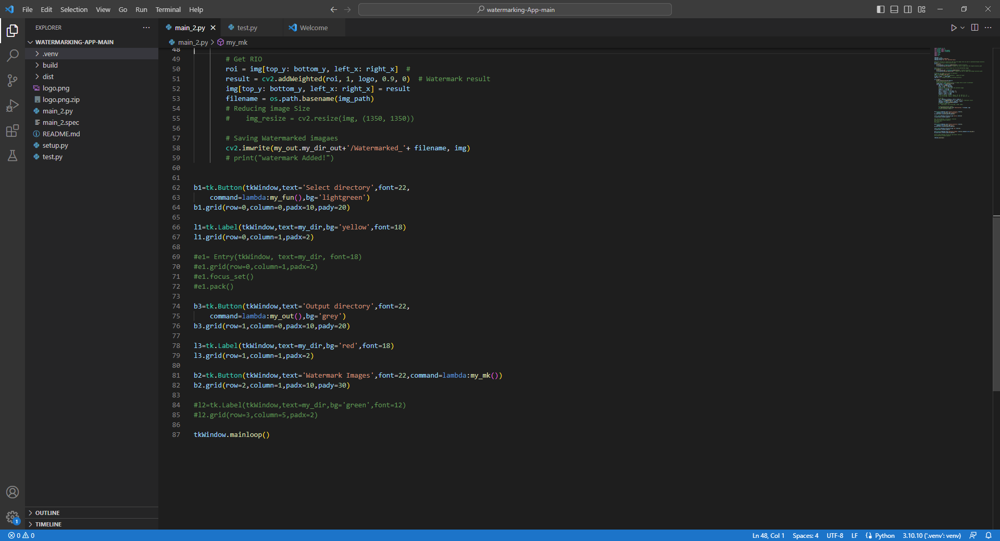
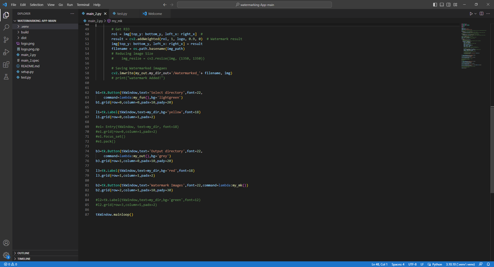

The aim of this project is to develop a script in Python that will allow for bulk watermarking of images using popular libraries like OpenCV, OS, and Glob. The project will also include creating a graphical user interface (GUI) using the tkinter library and making an executable file that will run on both Windows and MacOS.The following report will detail the steps taken to complete this project.Step 1: Installing the Required LibrariesThe first step in this project was to install the necessary libraries for Python. These included OpenCV, OS, and Glob. To install these libraries, we used the following commands in the command line:
Step 2: Creating a Watermark ImageThe next step was to create a watermark image that would be used to watermark the bulk of images. We used Adobe Photoshop to create a transparent PNG file of our desired watermark. The watermark image was then saved with the file name "watermark.png" and was saved in the same directory as the Python script.Step 3: Creating the Python ScriptThe Python script was created using the following steps:Importing the necessary libraries (OpenCV, OS, Glob, and Tkinter).Creating a Tkinter window and adding a button to allow the user to select a folder that contains the images they want to watermark.Once the folder has been selected, the script uses the Glob library to retrieve all the image files in the folder.The script then loops through each image in the folder and opens it using OpenCV.The watermark image is then resized to match the size of the image being watermarked.The watermark image is then added to the image being watermarked using the OpenCV addWeighted function.The watermarked image is then saved in the same folder with the prefix "watermarked_" added to the original file name.Step 4: Creating the Executable FileTo create the executable file, we used the PyInstaller library. PyInstaller allows us to package the Python script and all its dependencies into a single executable file.To create the executable file, we used the following command in the command line:
Conclusion:In conclusion, we have successfully developed a Python script that can bulk watermark images using popular libraries like OpenCV, OS, and Glob. We have also created a graphical user interface using the tkinter library and made an executable file that can run on both Windows and MacOS. This project demonstrates the power and versatility of Python in image processing and graphical user interface development.
Watermarking app in Python
Data Analyst / Engineer
Apr 2015 — Mar 2016


 
